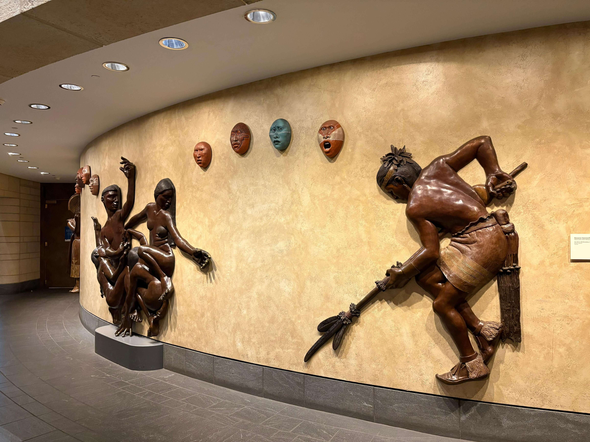

The National Museum of the American Indian, part of the Smithsonian Institution, offers an opportunity to explore the rich histories, cultures, and contemporary experiences of Indigenous peoples throughout the Americas. Located on the National Mall, the museum presents a wide range of exhibitions that highlight the diversity of Indigenous communities and their enduring cultural traditions. Its collections include historical objects, clothing, artwork, photographs, and everyday items that reflect different ways of life across generations. The exhibitions also explore the relationship between Indigenous communities, their ancestral lands, languages, and cultural identities. Beyond historical displays, the museum gives space to contemporary voices and perspectives, showing how these cultures continue to evolve and shape the present. The building itself is distinctive, with its curved stone architecture inspired by natural landscapes. These photographs capture my visit to this remarkable cultural institution in Washington, DC.
Explore my photographs from the National Museum of the American Indian, including its architecture, exhibitions, cultural objects, and the details that reflect the diverse heritage of Indigenous peoples of the Americas.
View All Photos ↗